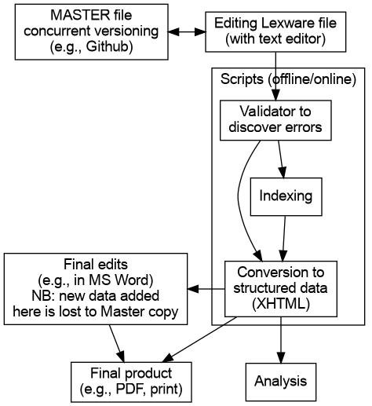

Fig 1. Elements of generating a dictionary from a Lexware file
Go to: ONLINE LEXWARE PROCESSING TOOLS
Go to: Github repo
A generic Text Editor is used to create and modify a Lexware file. Jim Kari and Tim Montler use EditPad Pro, for Windows. For the current project we wanted to develop and promote a solution that was free and open source, and which could be used for Windows, Mac, and Linux. We recommend Atom.
We have developed a Lexware language package for Atom that provides i) syntax coloring, and ii) keyboard shortcuts for common Dene non-Latin characters. The package can be easily installed from within Atom: just open Preferences, click the Install tab, and search for “Lexware”. Click the Install button on language-lexware. Tim Montler has developed a syntax coloring mode for EditPad Pro, and a Dene package for the key mapping software Keyman; please contact Tim for these packages.
If at any point there might be more than one person working on a Lexware file, including an assistant who may help with validation and formatting, it may be expedient to use a concurrent versioning system. Most academics are now familiar with the concurrent editing in Google Docs, but this resources was preceded by decades of tools available for software code writers to collaborate on projects. The most popular code sharing site today is Github, which uses the Git versioning system. Because a Lexware file is ‘line-oriented’, it is very similar to software code, using Github to manage Lexware editing is a good choice. Github “repos” can be either public or private, and you may choose to keep your working copy of a lexware file private. There are many guides to using Github, and the Atom editor has built-in Github capabilities.
However, if collaborators would prefer to use Google Docs, it is possible to adapt a Google Doc to facilitate Lexware editing. Please see here for a guide to adding syntax coloration to your Lexware file. At this time it is not possible to customize keystokes in Google Docs, so some other approach must be found for adding Dene diacritics (they can always be added laboriously using menu ‘Insert -> Special characters’). The GoogleDoc file will need to be downloaded as Plain text for use with the Lexware scripts, although the GoogleDoc text can be copied and pasted directly into the online converter.
Note that line numbering (needed for working with the validator) is not a standard function in Google Docs. However, an extension for the Chrome browser can be installed.
No Lexware syntax validation is available in the text editor itself, and the writer must carefully avoid band label typos, and adhere to the band order defined in the the grammar. Elements of a Lexware file that are out of order are not ‘wrong’ per se, but will not generate standardized dictionary entries and will not be available for analysis.
To detect typos and band order that does not conform to the Lexware Dene grammar, an additional layer of software is needed. In the current implementation, both validation and conversion to a structured data object are performed by the lw2xhtml program. The program contains a set of rules about which band may follow which other bands in which context. This rule set must be updated on every change to the grammar.
Running the validator returns a brief description of any errors, with their line number. The user can then either fix the error, or “comment out” the section.
The validator may be run online or on a user’s computer. More details here.
Validation can can also be performed by output the (non-HTML) XML version, and using an XML validator.
Conversion to a formatted dictionary is also done by the lw2xhtml program, which contains the logic to markup each data element with its position within a hierarchical dictionary entry. The output is HTML which can be viewed in any web browser. The precise formatting (text styles, indentation, etc.) is not stored in he HTML file, but is determined by an accompanying CSS file. Changes to this styling can be made easily by editing the CSS file, and without the need to generate a new HTML version of the dictionary.
To obtain a final PDF file, the HTML can be directly ‘printed to file’ from the browser, or can be saved as HTML and opened with a Word Processor where final edits can be made.
Markup within the Lexware file indicates index terms to be collected. The lw2xhtml program collects these and creates and index after the dictionary entries. The index is hyperlinked back to the entries.
A lexware file is essentially a database. However, much of the information is stored implicitly and is dependent on the context of the bands preceding it. This implicit information is hard to extract without first validating and restructuring the document. The HTML output of lw2xhtml is the valid XML dialect of HTML, with meaningful hierarchy and standardized terms for each class. It can thus be queried using XQuery to extract any choice of elements for further analysis. See here for an example.
Using the --xml switch, lw2xhtml will output a non-XHTML XML version, with structure using element names not div class attribites. This XML version can analysed via XQuery.